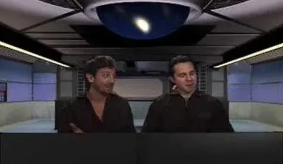
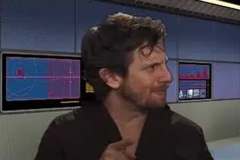
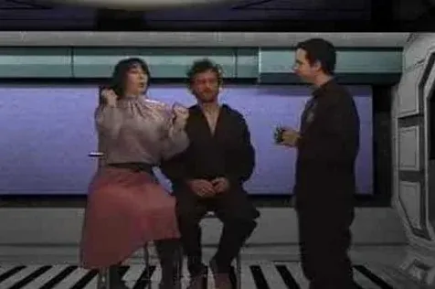
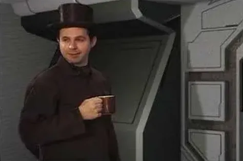
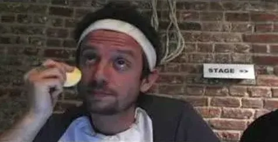
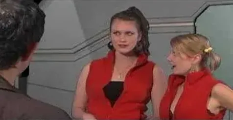
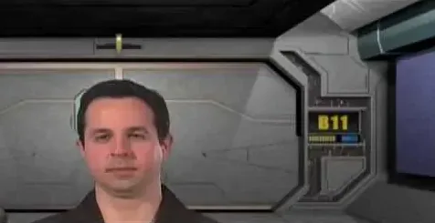
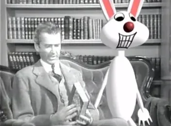

Films
In a previous life I was a filmmaker. Here are a web series and a handful of shorts I made with some very talented friends.
Captains In Space
This is a web series that I produced, acted in and sometimes wrote and directed. There were 8 episodes created between March 2006 and September 2008. I had the pleasure, luck and honor to work with a highly creative and talented group of actors, writers and film production professionals.

Play video: Captains In Space: In the Mood… For Fun
Play video: Captains In Space: Double
Play video: Captains In Space: Future Shock
Play video: Captains In Space: Proms Away
Play video: Captains In Space: Beauty
Play video: Captains In Space: Hairy Situation
Play video: Captains In Space: The Venutian CandidateAssorted Short Films
These are a few short films that I variously wrote, shot, directed and/or in which I acted. One of these films won an award at the Austin Film Festival (I think it was ‘Crackers’), which means that I can call myself “an award-winning filmmaker”. “And do you call yourself that?”, you might ask. “All the time. The ladies love it”, I would lie.
Crackers
This is an early film of mine, from way back in 1991. I shot it in both black and white and color, and did all the editing and negative cutting myself. It was a difficult and laborious process, but I really enjoyed it.
This film stars two good friends of mine in the main roles: Frank Schurter and Nick Harrigan (as the young man at the table).

Play video: Digital HarveyDigital Harvey
I wrote Digital Harvey during a brief hiatus between jobs in 1999. The inspiration for Digital Harvey was born of my frustration with movies that are big on special effects but short on story. Instead of using effects technology to support a story, it was being used, and still is, as a replacement for storytelling.
You’ll notice some familiar faces in Digital Harvey. Frank Schurter, who was in Crackers, plays Chaz Stelfreeze, a motion artist. Adam Walden plays my partner Steven Daniels. In the Datek Online mockumentary, Adam is Chip Stantion, fellow reporter to my Chip Johnson, and he is Captain Adam in Captains In Space.
Digital Harvey has been in a few film festivals: the Brooklyn International Film Festival, the Just For Laughs Comedy Festival in Montreal and The Murphy’s Cat Laughs Comedy Festival in Ireland. The Montreal Mirror made a nice mention of my film during the festival.
It was also on iFilm, where the comments by some of the 5,000+ people who watched it were great. Some people thought it was real and were horrified that a classic film like Harvey would be ruined. I found another review on the web that also thought it was real.
Links to festival and review sites go to archived copies on the Internet Archive; the originals are long gone.
Falco Birthday Video
My good friend Josh had a birthday and his wife Meredith wanted to give him a special gift. She asked all his friends to come up with a short video greeting wishing Josh a happy birthday.
Adam and I, not willing to give up an opportunity to ham it up, made a music video. We chose Falco’s “Jeanny”, knowing Josh’s predisposition to the late Austrian’s music.
This is a shortened version of the song. If you’re curious what was cut, read the original German lyrics and sing along with us.
The Joan Waldians
Joan Walden, the mother of my friend Adam Walden (who has been in many of my films: Digital Harvey, the Jeanny video) turned 60 in March of 2004. She decided to celebrate her birthday by holding a fundraiser for a very worthy organization in Hartford, CT, called Riverfront Recapture.
Joan, Adam and I wrote a series of sketches for the show, which was entitled “Forever 59”. The show was conceived as a mock telethon for the fictitious “Forever 59 Foundation”. The mission of the foundation was to keep “old people” like Joan Waldian 59 years old. Forever.
At the end of the show we screened this short film that Adam and I made. It’s a mockumentary about volunteers working to keep Joan Walden Forever 59.